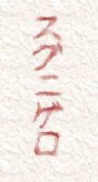
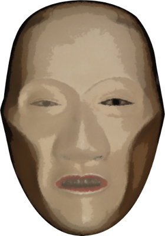
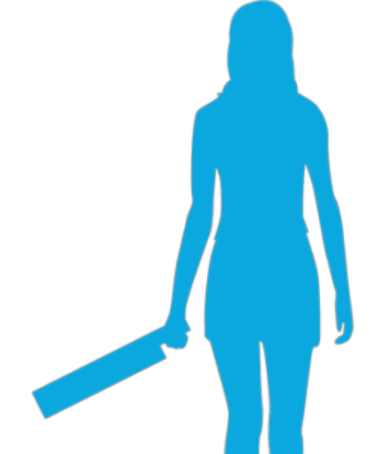

Encirclement


―RUNNOW
But this was clearly a warning from Shirozaki-san.
But this was clearly a warning from Shirozaki-san.
"Hey, what should I do...?"

"Natsumi, calm down. I'm gonna go tell Mom right now, tell her to take us back to Motoki-cho."
Haruka left the room.
Her tone had been slow, and quiet, as if to calm me down.
Her tone had been slow, and quiet, as if to calm me down.
"Goto... why would Shirozaki-san... something this creepy..."

"Senpai, it's all right. At least, the reason it's written in blood is that he needed to write a note without anyone getting suspicious.
If he wanted to write anything during the thirteenth-year memorial service just now, this was simply the only way to do it." [TN: Buddhist memorials count the year of death as the first year.]
"Without anyone getting suspicious? Why...?"
"Probably Shirozaki-san noticed. That the residents' suspicions are aimed at Kogori-senpai...!"
"No...! So it's because I have a witch's power after all!? But I haven't told anyone else about my intuition!?"
"Probably Shirozaki-san noticed. That the residents' suspicions are aimed at Kogori-senpai...!"
"No...! So it's because I have a witch's power after all!? But I haven't told anyone else about my intuition!?"

"Natsumi, Goto! Pack your stuff, now! Mom says she's getting the car out!"
"O-okay!"
I hadn't heard the cherry tree's voice, and yet things had turned dangerous.
"O-okay!"
I hadn't heard the cherry tree's voice, and yet things had turned dangerous.

"Eri-nee!"
Kana-chan came running into the room.
"Eri-nee, you're going home!? Is it really dangerous!?"
"Kana-chan... Yeah, but it's okay. We're leaving by car right away."
Kana-chan came running into the room.
"Eri-nee, you're going home!? Is it really dangerous!?"
"Kana-chan... Yeah, but it's okay. We're leaving by car right away."
Kana-chan opened the closet and stuck her head inside.

"I'm gonna protect Eri-nee and everybody, just watch!"
Kana-chan seemed to have taken two knives out of the closet.
"But Kana-chan, isn't that dangerous?"
"Mm... Goto-chan,
Kana-chan seemed to have taken two knives out of the closet.
"But Kana-chan, isn't that dangerous?"
"Mm... Goto-chan,

to escape, we need Kana's strength too."
Chiga-nee came into the room holding a knife too.
Chiga-nee came into the room holding a knife too.
"Mm... Kana, follow the car and cover us. I'll fight them off from the roof of the car."
"Got it!"
"Got it!"
The two of them left the room.
"C'mon, don't just stand there! No luggage is worth more than your life!"
We stuffed in whatever we could grab and left the room.

"See you, Grandma! I'll come back later!"

"Wait! Natsumi-chan, take this with you."

It was the Grand Witch's Noh mask that Erika-chan had been wearing earlier.
"The Grand Witches of generations past used this. It's sure to serve as an amulet!"
"Something that important...? But for me to accept this..."
"There's nothing left I can do now but this... Think of it as me, and take me along with you."
"Natsumi, c'mon, we're going!"
"Th-thank you, Erika-chan!"
"Something that important...? But for me to accept this..."
"There's nothing left I can do now but this... Think of it as me, and take me along with you."
"Natsumi, c'mon, we're going!"
"Th-thank you, Erika-chan!"
With barely a goodbye, we left the Niimura main house.

"Come on, get in, quick!"
Obasan was already in the driver's seat.
Obasan was already in the driver's seat.

"Mm... Auntie, it's all right! Nothing's wrong with the car!"

Chiga-nee shouted that, then climbed straight up onto the roof of the car.
"Hey, Chiga-nee, what're you doing!? Chiga-nee, get in the car too!"
"Haruka! Leave this to Chigaya-chan! We're going!"
"Ah, geez! Don't blame me if you fall off!"
"Haruka! Leave this to Chigaya-chan! We're going!"
"Ah, geez! Don't blame me if you fall off!"
Obasan lurched the car into motion with Chiga-nee still on the roof.

"Mom, why won't you let Chiga-nee in!?"
"Given the time, nobody should have reached the foot of the mountain yet. So there's a good chance we'll be attacked on the mountain road! If anyone attacks us, Chigaya-chan will drive them off!"
"Given the time, nobody should have reached the foot of the mountain yet. So there's a good chance we'll be attacked on the mountain road! If anyone attacks us, Chigaya-chan will drive them off!"
"Chiga-nee won't fall off or anything, right...?"
"Don't underestimate Chigaya-chan's athleticism. Besides, even if they're using Droga, whoever's on this unsteady footing first has the advantage in a fight!"
"Don't underestimate Chigaya-chan's athleticism. Besides, even if they're using Droga, whoever's on this unsteady footing first has the advantage in a fight!"

"Hello? Dad!?"
"Natsumi, are you all right!?"
"Yeah, but my intuition isn't working at all! Why is that...!?"
"Natsumi, are you all right!?"
"Yeah, but my intuition isn't working at all! Why is that...!?"
"Natsumi, calm down! Your intuition isn't working because you're safe as things stand!
Now listen to me carefully! Keep the car windows open the whole time.
If there's any danger, you should notice it right away!"
"O-okay!"
"Everyone, keep your heads down! There are hunting rifles in Arata too!"
"G-guns!?"
"G-guns!?"
At those words, we immediately squeezed down below the seats.

Clutched in my hands were the cherry branch and the Grand Witch's Noh mask.
This Noh mask was heavy, and made of metal.
It was a Noh mask that had held up through generation after generation.
If Erika-chan says it'll be all right, then it'll surely be all right...!
This Noh mask was heavy, and made of metal.
It was a Noh mask that had held up through generation after generation.
If Erika-chan says it'll be all right, then it'll surely be all right...!
I tucked the Noh mask into the front of my clothes and hugged it tight.
Please, Grand Witches of generations past! Protect everyone...!
Please, Grand Witches of generations past! Protect everyone...!
"Sis, be careful! Looks like there's some people up ahead!"
"Mm... understood! Kana, you absolutely can't fight! If they're using Droga, you have no chance!"
"Mm... understood! Kana, you absolutely can't fight! If they're using Droga, you have no chance!"
From right above us came a tremendous clash of metal.
When I cautiously turned my eyes toward the windshield―
When I cautiously turned my eyes toward the windshield―

............!?
Several residents, still dressed for the thirteenth-year memorial service, were clinging to the car.
"Mm... leave it to me!
Several residents, still dressed for the thirteenth-year memorial service, were clinging to the car.
"Mm... leave it to me!
It's all right! I'll protect all of you, right to the end!"
Chiga-nee seemed to have driven off the residents clinging to the car.
Chiga-nee seemed to have driven off the residents clinging to the car.
But from all around the mountain road, shinigami after shinigami came leaping out toward the car.
However you looked at it, they were leaping a good 3 meters high.
That was the effect of Droga―
Was Chiga-nee going to drive all of them off by herself...!?
That was the effect of Droga―
Was Chiga-nee going to drive all of them off by herself...!?
But one after another, they were pushed back down to the ground.
So this was what it meant that whoever stood on the unsteady footing had the advantage of the ground.
Only their muscle strength had gone up, not their sense of balance.
Chiga-nee, used to situations like this, had the advantage.
So this was what it meant that whoever stood on the unsteady footing had the advantage of the ground.
Only their muscle strength had gone up, not their sense of balance.
Chiga-nee, used to situations like this, had the advantage.
The residents I'd thought had fallen off came crawling back up.
"Auntie, sorry! I can't cover this side!"
"There's a sharp bend just ahead! I'll shake them off there!"
"Auntie, sorry! I can't cover this side!"
"There's a sharp bend just ahead! I'll shake them off there!"

Obasan stepped hard on the gas.
............!!
That just now was clearly me sensing danger...!
"Look out! Obasan, stop!"
That just now was clearly me sensing danger...!
"Look out! Obasan, stop!"
The instant I shouted, the car slammed on its brakes.
The residents clinging to the car all slid off it at once.
The spot where we had slammed on the brakes was right where the mountain road swung around in a big hairpin bend―
The residents clinging to the car all slid off it at once.
The spot where we had slammed on the brakes was right where the mountain road swung around in a big hairpin bend―
"That was close...!"
One meter ahead of the car, a single big tree lay on its side, blocking the road.
If we had kept going at that speed, we definitely would have crashed.
One meter ahead of the car, a single big tree lay on its side, blocking the road.
If we had kept going at that speed, we definitely would have crashed.
"Chigaya-chan, are you all right!?"
"Mm... I'm fine! Auntie, you did well to notice it."
"Natsumi-chan's danger sense kicked in!"
"D-danger sense!? Then go back to the settlement, quickly! Right now, there should be no one in the settlement but the Niimura family!"
"Mm... I'm fine! Auntie, you did well to notice it."
"Natsumi-chan's danger sense kicked in!"
"D-danger sense!? Then go back to the settlement, quickly! Right now, there should be no one in the settlement but the Niimura family!"

The car accelerated hard right there and spun 180 degrees.
Then it tore back the way we had come at breakneck speed.
Then it tore back the way we had come at breakneck speed.
"Haruka! Call Grandma right now and tell her we're coming back!"
"G-got it!"
"G-got it!"
Then came the sound of someone else, one more person, climbing onto the roof.

"Sis, are you okay!?"
"Mm... I'm fine!"
Kana-chan seemed to have joined us here.
"Mm... I'm fine!"
Kana-chan seemed to have joined us here.
"Mm... was there anyone with a gun!?"
"Just one! But I jumped them from behind and broke the gun!"
"Mm... then we're all right now. Kana, watch the front! I'll take the back!"
"You got it, Sis!"
The footsteps on the roof stopped completely.
The two of them seemed to be holding still, braced for an attack.
"Just one! But I jumped them from behind and broke the gun!"
"Mm... then we're all right now. Kana, watch the front! I'll take the back!"
"You got it, Sis!"
The footsteps on the roof stopped completely.
The two of them seemed to be holding still, braced for an attack.
"Mom, I got through to Grandma! She says go to Kana's secret base right away!"
"That place has only one way in and out, so we just have to hold the ladder. And by the time they reach it, the Droga should have worn off."
"That place has only one way in and out, so we just have to hold the ladder. And by the time they reach it, the Droga should have worn off."
"Can you take more Droga right after it wears off?"
"............ Apparently you can..."
"............ Apparently you can..."

"Wait, then those guys can come back as many times as they want! We won't be safe underground either, right!?"
"It's all right. I'll guard the entrance."
"It's all right. I'll guard the entrance."
"D-don't be stupid! There's no way you can take on monsters like that!"
"Using Droga puts a huge strain on the body. Even if they use Droga again, they shouldn't have as much strength as before."
"Using Droga puts a huge strain on the body. Even if they use Droga again, they shouldn't have as much strength as before."
"But come on...!"
"Stop arguing and go underground with Natsumi-chan and Goto-chan! Got it!?"
"Stop arguing and go underground with Natsumi-chan and Goto-chan! Got it!?"
"Mm... Auntie! Looks like we've shaken them off!
It's safe to slow down!"
"Roger!"
"Roger!"
―The car climbed the mountain, passed through the trees, entered the settlement―
After that, we made it to near the secret base without being attacked.
After that, we made it to near the secret base without being attacked.


"Is everyone all right!?"
"Inside, quickly!"
In front of the secret base, Erika-chan and Kotaro-san were already waiting.
For a moment, I felt quite uneasy that Kotaro-san was there, but―
Still, it meant that at least Kotaro-san hadn't been among the attackers.
"Inside, quickly!"
In front of the secret base, Erika-chan and Kotaro-san were already waiting.
For a moment, I felt quite uneasy that Kotaro-san was there, but―
Still, it meant that at least Kotaro-san hadn't been among the attackers.
Besides, I couldn't hear the cherry tree's voice anymore either.
Does that mean it's all right to keep going like this?
Don't hesitate...! Believe in yourself!
Even just now, I sensed the danger and we managed to avoid hitting the fallen tree...!
Does that mean it's all right to keep going like this?
Don't hesitate...! Believe in yourself!
Even just now, I sensed the danger and we managed to avoid hitting the fallen tree...!
"Huh? Where's Chiga-nee?"
"My big sister got off around the entrance to the settlement. She said she'd keep watch there."
"Chiga-nee all alone... is she gonna be okay...?"
"Chiga-nee all alone... is she gonna be okay...?"

"Well then, from here on I've got to do my part too."

"Can't be helped... Guess I'll get some exercise for the first time in a while."
Even Erika-chan was gripping a nata.
Even Erika-chan was gripping a nata.
"Hey! Can Grandma and Mom even fight!?"
"Haruka, the women of Arata always put their lives on the line...!"
"Haruka, the women of Arata always put their lives on the line...!"
"Kotaro! Hurry, you get underground too!
You're not planning to fight with that belly sticking out, are you!?"

"Damn...! Everyone, inside, quickly!"
"Hey, Goto, what do we do!? Is it really okay to go with Kotaro-san!?"

"That's... hmm..."
As I thought, the two of them were wary of Kotaro-san too.
Even with Kana-chan along, I couldn't help balking at going into a sealed room underground with Kotaro-san.
As I thought, the two of them were wary of Kotaro-san too.
Even with Kana-chan along, I couldn't help balking at going into a sealed room underground with Kotaro-san.
"Come here."
That just now...
I heard a voice carried on the wind.
Haruka's dad is calling...?
I heard a voice carried on the wind.
Haruka's dad is calling...?
Read ✓ Next in this arc →